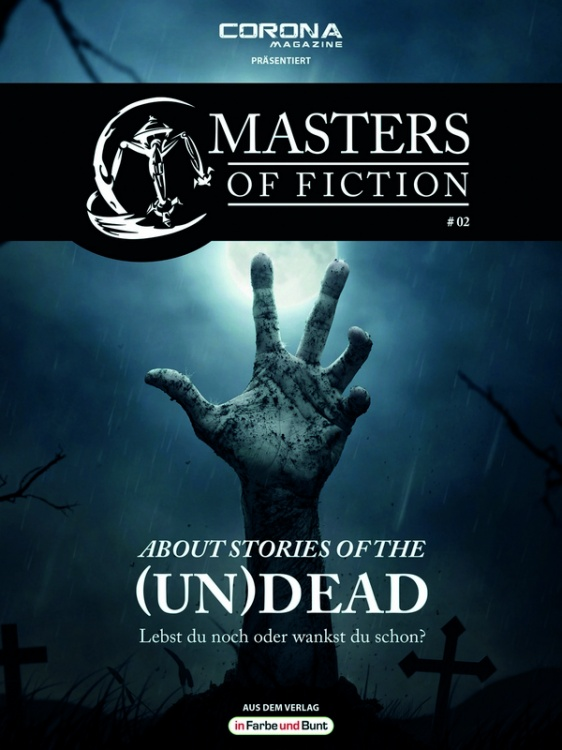
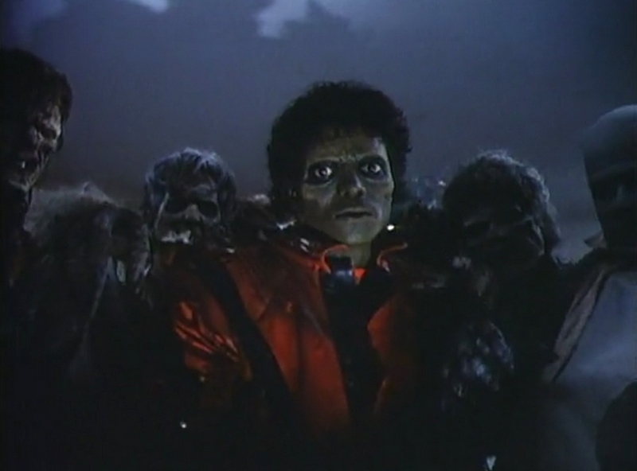
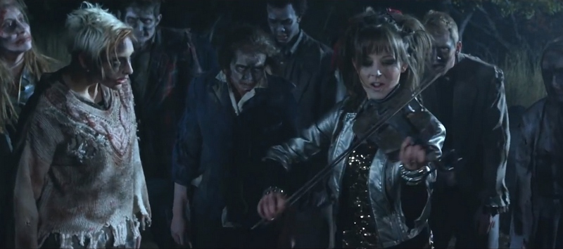
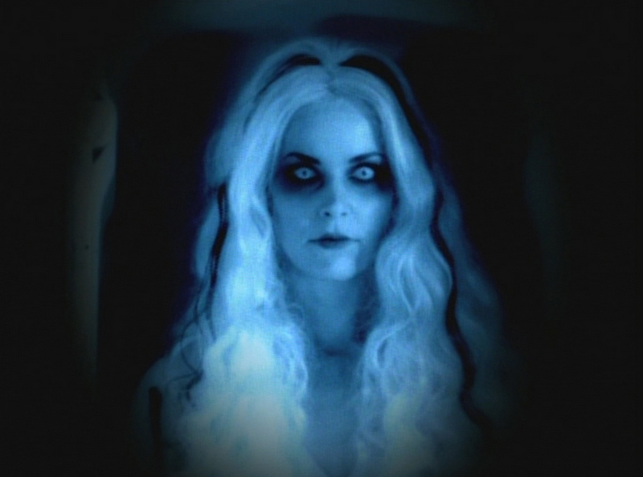

von Elias Albrecht

Masters of Fiction #02: About Stories of the (Un)Dead (© in Farbe und Bunt Verlag)
Masters of Fiction #02: Musik (Leseprobe)
Never too Dead to Rock
Nightmares on Stage
»All you zombies, hide your faces.
All you people in the street.
All you sittin' in high places.
The pieces gonna fall on you.«
(Refrain aus dem Song All You Zombies
der Band The Hooters)
Im Musikvideo zum Song »Thriller« aus dem Jahr 1983 (Originallänge mehr als 13 Minuten) sitzt Poplegende Michael Jackson mit seiner Freundin (Ola Ray) im Kino. Gemeinsam schauen sie sich einen Horrorfilm an, in dem Michael die Hauptrolle spielt. Als sich der Sänger auf der Leinwand in einen Werwolf verwandelt, wird es seiner Begleitung »too scary«. Auch wenn Jackson sichtlich seinen Spaß mit dem Film hat, verlassen beide das Kino. Nun setzen die Thriller-typischen Rhythmen ein. Auf der Leuchtreklame über dem Kinoeingang steht »Vincent Price THRILLER« – eine Ehrerbietung auf die Gruselfilmikone, die auch eine Textpassage im Lied spricht. In den Schaukästen hängen verschiedene Filmplakate, u.a. zu SCHLOCK (DT: SCHLOCK – DAS BANANENMONSTER; 1973), John Landis' (THE BLUES BROTHERS; 1980) ersten Film, der auch die Regiearbeit im besagten Musikvideo übernahm. Die SFX hat Rick Baker gestaltet, der auch für die Effekte in Landis' AN AMERICAN WEREWOLF IN LONDON verantwortlich war.
Michael und seine Freundin gehen eine verlassene Straße entlang. Der King of Pop versucht wieder, sich mit seiner Begabung als Sänger bei seiner Liebsten einzukratzen. Mit Erfolg, wie es scheint. Beide freuen sich ihres Lebens. Als sie an einem Friedhof vorbeigehen, bemerken sie jedoch nicht, dass die Toten gerade wieder auferstehen – wahrscheinlich angelockt durch Michaels Stimme. Auf einmal ist das Paar von Zombies umzingelt. Bekanntlich soll man ja mit den Wölfen heulen, und so verwandelt sich Jackson in einen Zombie. Zusammen mit den zunächst wankenden Untoten, legt er ein flottes Tänzchen aufs Parkett, bzw. auf die Straße.

Michael Jackson als Zombie umringt von seinesgleichen im Musikvideo Thriller.
»Meiner Ansicht nach lässt sich [...] Michael Jacksons Clip als eine Allegorie darauf lesen, dass man im Musikbusiness zu einem Untoten wird, der nur noch mechanisch und ohne eigenen Antrieb und Leidenschaft tanzt«, meint Michaela Wünsch in einem Aufsatz. (Wünsch, Michaela: Zombies unter Einfluss des Todestriebs, in: Fürst/Krautkrämer/Wiemer 2011, S. 188)
Landis' Musikvideo veranlasste 2007 den Gefängnisdirektor und Sicherheitsberater des Cebu Provincial Detention and Rehabilitation Center (ein Gefängnis in Cebu auf den Philippinen) Byron Garcia dazu, mit 1.600 Straftätern eine Tanzperformance auf die Beine zu stellen.
»Beschäftigungs-Therapien wie Yoga oder Stricken wollte Byron den harten Kerlen im Knast nicht antun. Als großer Musikfan wollte er lieber so richtig die Puppen tanzen lassen. Zu allererst wurde eine Tanzlehrerin engagiert. Seit Gwen Lador nun hinter den Gittern von Cebu den Takt angibt, hat sich einiges geändert. Keine Gewaltausbrüche mehr, keine Langeweile, die die Insassen auf wilde Gedanken bringt. Mindestens fünfmal die Woche wird trainiert. Und das Ergebnis kann sich sehen lassen.« (Stern)
Die Aufführung wurde gefilmt und auf YouTube veröffentlicht. Mit der Tanzeinlage wurden die Gefängnisinsassen weltberühmt.
»Durch ihre gleichförmige Gefängniskluft und das Set, bestehend aus einer Gefängnisturnhalle, hat die Aufführung etwas Unheimliches, und der Eindruck des Fremdgesteuerten ist noch stärker als in Jacksons Video.« (Wünsch 2011, S. 188)
Am Ende des Musikclips war alles für Ola Ray nur ein böser Traum. Oder etwa doch nicht? Schreiend erwacht sie auf der Couch und wird sogleich von Michael getröstet. Beide Protagonisten kehren dem Betrachter den Rücken zu. Plötzlich dreht sich Jackson um und erschrickt das Publikum mit gelb leuchtenden Augen.
Spätestens seit Michael Jacksons Thriller sind Zombies auch für die Musikindustrie interessant. Jackson hatte anscheinend eine Faible für die Untoten: Auch im 38 minütigen Musikclip Ghosts (1997) tanzt er an der Seite bereits Verstorbener, um den aufgebrachten Mob seiner Heimatstadt, der ihn aus seiner Villa verscheuchen will, das Fürchten zu lehren. Für Ghosts wurde ALIENS- und JURASSIC PARK-SFX-Verantwortlicher Stan Winston, der auch im besagten Musikvideo Regie führte, und sein Team mit der Herstellung der Effekte betraut. Michael liebt sie alle; egal ob Menschen oder Zombies.
Michael Jackson, der am 25. Juni 2009 in Los Angeles verstarb, machte Zombies für die Musikbranche salonfähig. Durch seine Songs, die auf ewig weiterleben, ist der King of Pop selbst unsterblich geworden.
Jacksons Tanzperformance mit lebenden Toten hat bis heute zahlreiche Nachahmer gefunden: Wie die US-amerikanische Violinistin Lindsey Stirling, die im Videoclip zum Song »Moon Trance« Zombies zu klassischen und dubstep-Rhythmen tanzen lässt. Die Anlehnung an Michael Jacksons »Thriller« ist kaum zu übersehen.

Lindsey Stirling beschwichtigt im Videoclip »Moon Trance« Zombies mit ihrer Geige.
Vom Pop zum Metal – Rob Zombie
Robert Cummings aka Rob Zombie, am 12. Januar 2015 50 geworden, ist durch seine Vielfältigkeit als Künstler ein Hans Dampf in allen Gassen: Als Schockrocker kämpft er in der Riege morbider Vögel wie Alice Cooper (PRINCE OF DARKNESS (DT: DIE FÜRSTEN DER DUNKELHEIT; USA 1987)) oder Marilyn Manson an vorderster Front des Hard-Rock-Business. Aber auch als Regisseur für gestörte Geschichten ist Rob Zombie inzwischen vielen Horror-Freaks rund um den Globus ein Begriff – u.a. führte er in HOUSE OF THE 1000 CORPSES (DT: DAS HAUS DER 1000 LEICHEN; 2003), THE DEVIL'S REJECTS (2005), den Remakes zu Carpenters HALLOWEEN I und II (2007 und 2009) und sogar bei einer Folge der Serie CSI: MIAMI (2002-12) Regie.
Er ist aber auch für seine durchgeknallten Comics bekannt – neben dem Animationsfilm THE HAUNTED WORLD OF EL SUPERBEASTO (2009) entsprang auch die Halluzinationsszene im Spielfilm BEAVIS AND BUTT-HEAD DO AMERICA (DT: BEAVIS UND BUTT-HEAD MACHEN'S IN AMERIKA; 1996) zur damals erfolgreichen MTV-Zeichentrickserie seinem Geist.
Seine Passion für Horrorfilme (vor allem B-Movies) wurzelt in Roberts Kindheit: In jungen Jahren wurde er von seiner Mutter vor den Fernseher gesetzt, wo er sich einen Horror-Trash-Movie nach dem anderen anschaute.
Kaum volljährig, zog Robert nach New York und hielt sich mit allen möglichen Jobs über Wasser (Fahrradkurier, Layouter von Porno-Magazinen oder Produktionsassistent der US-amerikanischen Kindersendung PEE-WEE'S PLAYHOUSE (1986-91)). Nebenbei gründete er die Metal-Band White Zombie, benannt nach Victor Halperins Film von 1932. Da sich seine Platten als Solokünstler besser verkauften, löste er White Zombie 1998 auf. Im gleichen Jahr erschien Zombies Album Hellbilly Deluxe, das in den USA dreifach mit Platin ausgezeichnet wurde.
Hierzulande stieg der Bekanntheitsgrad des Musikers vor allem durch Score-Beiträge, wie zur MATRIX-Trilogie (1999-2003) – im Besonderen durch den Song »Dracula« des Remixalbums zur ersten Scheibe mit dem Titel American Made Music To Strip By – oder zu MISSION: IMPOSSIBLE II (2000). Auch mit dem Fake-Trailer zu WEREWOLF WOMEN OF THE SS in Quentin Tarantinos und Robert Rodriguez' GRINDHOUSE-Doublefeature DEATH PROOF und PLANET TERROR aus dem Jahr 2007 erregte Zombie Aufmerksamkeit.
Außerdem besitzt das Multitalent sein eigenes Musik-Label (Zombie-A-Go-Go Records) und entwarf für den Freizeitpark der Universal Studios einen Horrorbereich. Beim 2001 produziertem Album The Sinister Urge assistierten ihm Ozzy Osbourne, Kerry King von den Thrash-Metal-Göttern Slayer und DJ Lethal, bekannt durch die Nu-Metalheads Limp Bizkit. Der Erfolg der Scheibe erlaubte es dem Schockrocker, gemeinsam mit Ozzy eine große Weihnachtstour auf die Beine zu stellen. Auf Robs erster Live-DVD THE ZOMBIE HORROR PICTURE SHOW (2014) erkennt man dessen Vorliebe für besonders düstere Bühnenshows- und -Dekors. Bei der Wahl der Bühnenkulisse lässt er sich von alten B-Movie-Klassikern inspirieren.
Im April 2013 erschien mit Venomous Rat Regeneration Vendor Zombies fünftes und bisher letztes Studioalbum, das er mit Ex-Marilyn-Manson-Gitarrist John 5 und -Drummer Ginger Fis einspielte. Laut Aussage des Künstlers erblickt bald eine neue Scheibe das schummrige Licht der Welt (Titel bisher noch nicht bekannt).
Ansonsten ist Zombie auch als Synchronstimme in verschiedenen Serien und Filmen zu hören. In SPIDER-MAN: THE ANIMATED SERIES (DT: NEW SPIDERMAN; 1994-98) lieh er Dr. Curt Connors (alias The Lizard) seine Stimme und in der Trickserie JUSTICE LEAGUE (DT: DIE LIGA DER GERECHTEN; 2001-06) der Figur Ichthultu.
Dank der engen Freundschaft mit Regisseur James Gunn spricht Rob Zombie in SLITHER ein Voice-Over-Kommentar, und in GUARDIANS OF THE GALAXY hört man ihn als Stimme des Ravager-Navigators. Spielzeughersteller McFarlane-Toys widmete Zombie sogar eine eigene Actionfigur – Mr. Manson hat bisher noch keine.
Living Dead Girl – Sheri Moon Zombie
Seine große Liebe Sheri Moon zeigt uns Rob Zombie, wo er kann: Mit bürgerlichen Namen heißt sie Sheri Lyn Skurkis, nach der Hochzeit mit dem Horror-Freak am 31. Oktober 2002 – sicherlich gab es zwischen den Beiden keine Streitereien bei der Wahl des Termins –, Sheri Moon Zombie. In THE DEVIL'S REJECTS spielt sie einen Mix aus infantiler Femme fatale und weiblichem Ed Gein namens Baby und im Remake zu HALLOWEEN die Mutter von Michael Myers, die im zweiten Teil nur als Geist in Erscheinung tritt. Als sexy Cover-Girl ziert sie Robs Remix-Scheibe Mondo Sex Head, und in vielen Musikclips – z.B. als »Living Dead Girl« im gleichnamigen Song – ist sie ein wesentliches Element. Sicherlich zur Frustration vieler Feministinnen setzt Rob Zombie seine Frau oft aufreizend in Szene. Ihr Auftritt als Stripperin in der Barszene in HALLOWEEN raubt einem Mann den Atem. Hier tanzt sie zum Song »Love Hurts« von Nazareth – den Score stellte Tyler Bates (u.a. WATCHMEN (DT: WATCHMEN – DIE WÄCHTER; 2009)) zusammen.

Caligari meets Metal: Sheri Moon Zombie als »Living Dead Girl«.
Fast zeitgleich mit Rob Zombies Venomous Rat Regeneration Vendor erschien sein sechster Film THE LORDS OF SALEM (2013). Dieser handelt von rachsüchtigen Hexen und spiegelt anfangs Zombies Version der Hexenprozesse von Salem im Jahre 1692 wider.
Eines Tages bekommt Radiomoderatorin Heidi, gespielt von Sheri Moon, eine mysteriöse Box samt Schallplatte der Band Lords. Als Heidi sich den Song der Scheibe anhört, läuft die Platte aus irgendeinem Grund rückwärts. Der hypnotische Sound konfrontiert Heidi mit einem höllischen Flashback. Denn hinter der Band stehen die wiedergekehrten Hexen. Dank des Erfolgs des Songs, der bei Heidis Radio-Show normal abgespielt wird, geben die Hexen ein Konzert, bei dem sie einen Hexensabbat beschwören. Ganz im Sinne Stephen Kings und John Carpenters üben sie Rache an den Nachfahren ihrer Peiniger.
Das Motiv, dass rückwärts abgespielte Musik satanische Nachrichten oder Beschwörungsformeln beinhaltet, geht auf einen Song der britischen Rockband The Beatles zurück: »Helter Skelter« heißt dieser Track und befindet sich auf The White Album. Der Song soll Charles Manson mit seinen Jüngern zum Massaker u.a. an Sharon Tate, Roman Polanskis damalige Lebensgefährtin, inspiriert haben. (Vgl. Welt)
[…]
Noch mehr über Zombie-Motive im Musikbusiness erwartet Sie – neben vielen weiteren Themen rund um die Untoten in Literatur, Film, Fernsehen und Videospielen – in Masters of Fiction #02: About Stories of the (Un)Dead - Lebst du noch oder wankst du schon?. Überall erhältlich, wo es eBooks gibt.